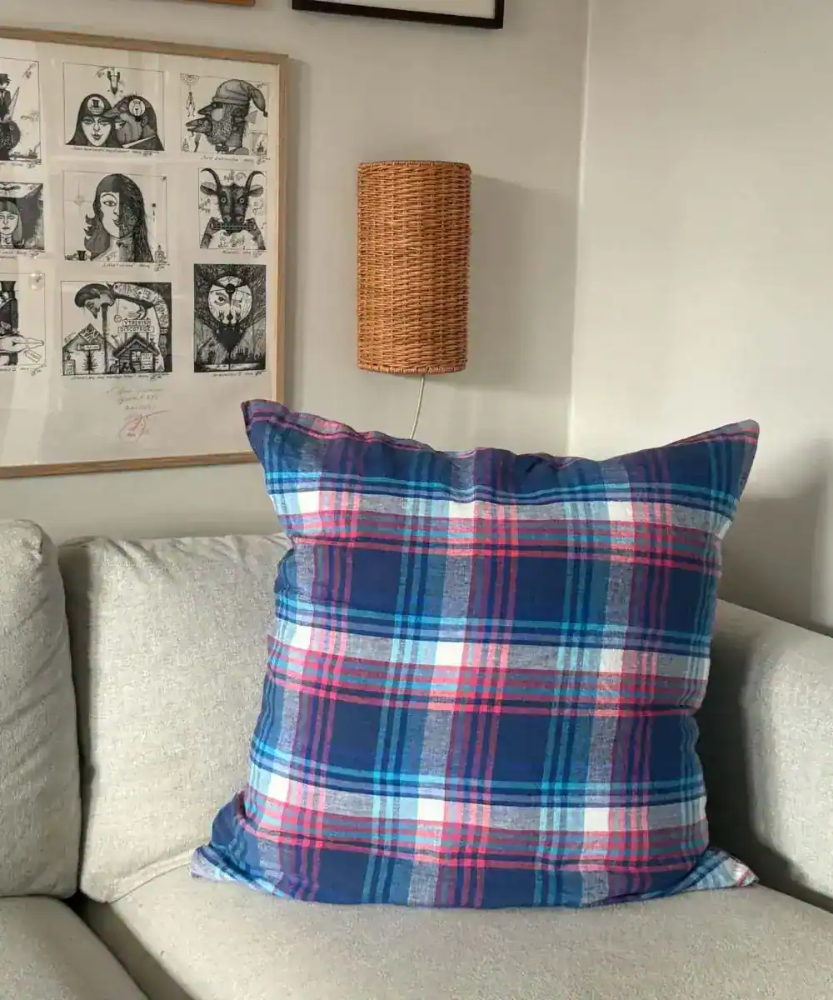
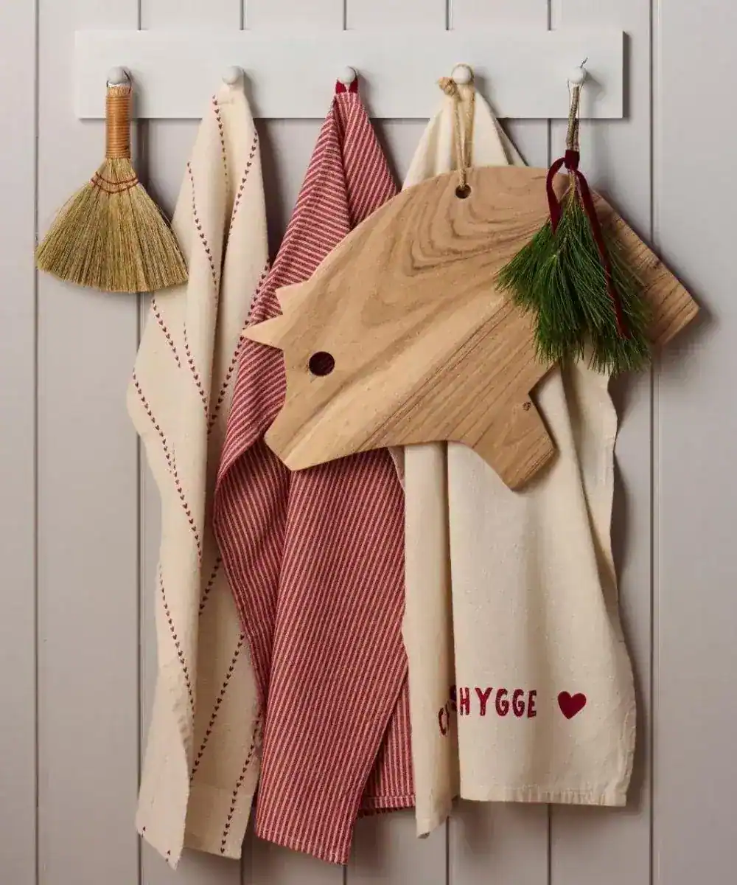

Hjem / Interiør
Interiør
Til hjemmet: tekstiler, kjøkken, dekor og belysning – og gaver til både hverdag og fest.
Kategorier
- Bad og velvære: baderomsartikler, håndklær, såper og kremer
- Tekstiler: duker, gulvtepper og matter, putetrekk, pledd, innmatsputer
- Kjøkken: borddekking, kjøkkenutstyr, servietter
- Dekor og belysning: lamper, lyslykter, lys og duftlys, vaser, potter, fyrstikker, smådekor
- Veggdekorasjon: knagger og kroker, plakater, rammer, hyller
- Oppbevaring: kurver og stablekasser

